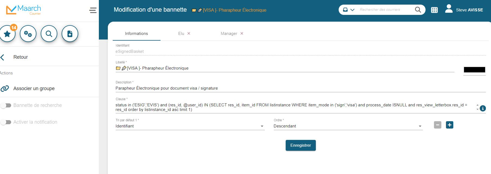
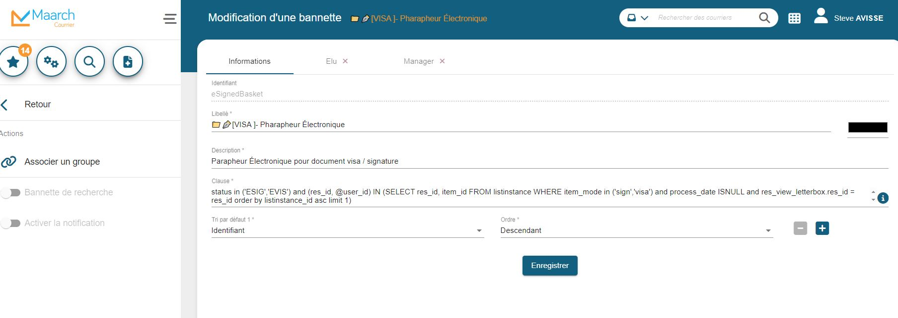

Révolution Numérique : Migration d'Application pour une Gestion de Courrier Optimisée

 

- Categorie: Maarch Migration
- Pour: Mairie de Montrouge
Introduction :
À l'ère de la transformation digitale, l'efficacité des outils informatiques devient cruciale pour la performance organisationnelle. Ce projet de migration d'application, au cœur de cette révolution, s'articule autour du passage de Maarch Courrier d'un éditeur actuel vers Xélian. Au-delà d'une simple transition technologique, cette migration incarne une stratégie méticuleuse visant à rehausser la communication interne, la réactivité et l'efficacité opérationnelle grâce à une gestion électronique du courrier repensée.
Mais aussi une historisation des courriers qui assure une traçabilité complète, permettant aux utilisateurs de remonter dans le temps et d'accéder à l'historique détaillé de chaque document. Cette fonctionnalité offre non seulement une réponse rapide aux demandes de recherche de documents passés, mais elle renforce également la transparence, la conformité et la sécurité des données au sein de l'organisation.
Maarch
Le logiciel Maarch Courrier, en particulier, est une solution complète de gestion électronique de courrier. Il permet de traiter efficacement les courriers entrants et sortants à l'aide d'outils numériques. Voici quelques fonctionnalités clés de Maarch Courrier:
- Qualification & Indexation : Maarch Courrier propose différentes méthodes de numérisation ou d'acquisition de courriers, que ce soit du papier ou des courriels. Il permet de qualifier et d'indexer les courriers à partir d'un écran unique.
- Circulation du Courrier : En fonction de l'objet du courrier, Maarch Courrier permet de définir le destinataire au sein d'un service traitant, avec la possibilité de spécifier une liste de diffusion. Cela facilite la circulation du courrier entre les différents services.
- Réponses Collaboratives : Maarch Courrier facilite la participation aux réponses collaboratives ou à la rédaction de courriers sortants. Les modèles définis sont directement exploités par le logiciel.
- Viser & Signer : Intégration d'un parapheur électronique qui permet de viser et de signer les courriers directement depuis le système de gestion électronique de courrier.
- Open Source : Maarch Courrier est une solution libre et open source, ce qui signifie que son code source est accessible et peut être modifié selon les besoins de l'organisation.
Analyse des Besoins et Objectifs :
En tant que chef de projet, j'ai amorcé le processus en identifiant minutieusement les raisons motivant la migration. J'ai scruté en détail les lacunes actuelles avec l'éditeur en place tout en définissant clairement les avantages anticipés avec Xelian. Les objectifs spécifiques de la migration ont été rigoureusement définis pour guider chaque étape du projet.
Sélection de Xelian comme Nouvel Éditeur :
J'ai dirigé le processus de sélection de l'éditeur, expliquant méticuleusement les critères qui ont conduit au choix de Xelian. Une analyse comparative approfondie des fonctionnalités a été réalisée, mettant en lumière les avantages significatifs qu'offre le nouvel éditeur par rapport à son prédécesseur.
Planification du Projet :
En tant que chef d'orchestre de cette migration, j'ai élaboré un calendrier détaillé, identifiant les phases clés et respectant des délais stricts. J'ai également alloué les ressources nécessaires à chaque phase du projet, garantissant ainsi une exécution fluide et efficace.
Préparation des Données :
J'ai mis en place une méthodologie rigoureuse pour extraire les données de l'ancien serveur, assurant ainsi une transition sans heurts. Le processus de préparation des données a été soigneusement expliqué, démontrant la préparation minutieuse entreprise pour garantir l'intégrité des informations.
Migration du Serveur :
Les étapes techniques de la migration du serveur ont été détaillées, soulignant ma responsabilité à maintenir la continuité des opérations pendant cette phase cruciale du projet.
Intégration des Données sur le Nouveau Serveur :
J'ai dirigé le processus de réintégration des données sur le serveur Xelian, veillant à la cohérence et à l'intégrité des informations transférées.
Validation et Tests :
En tant que garant de la qualité, j'ai minutieusement détaillé les tests effectués pour assurer le bon fonctionnement de l'application sur le nouveau serveur. Tout problème identifié a été résolu de manière proactive.
Formation et Adoption :
J'ai conçu et présenté un plan de formation exhaustif pour les utilisateurs finaux, tout en décrivant les initiatives déployées pour faciliter l'adoption en douceur du nouvel éditeur au sein de l'organisation.
Gestion du Changement :
Les stratégies de gestion du changement que j'ai mises en place ont été exposées, mettant l'accent sur ma démarche proactive pour minimiser la résistance au changement. J'ai assuré une communication constante avec les parties prenantes tout au long du projet.
Évaluation Post-Migration :
En phase post-migration, j'ai analysé avec précision les performances de la nouvelle solution par rapport aux objectifs établis. Les retours d'utilisateurs ont été recueillis et ont servi de base pour identifier des opportunités d'amélioration continue. Mon rôle a été central dans l'assurance d'une transition réussie avec Xelian, bénéfique pour l'ensemble de l'organisation.